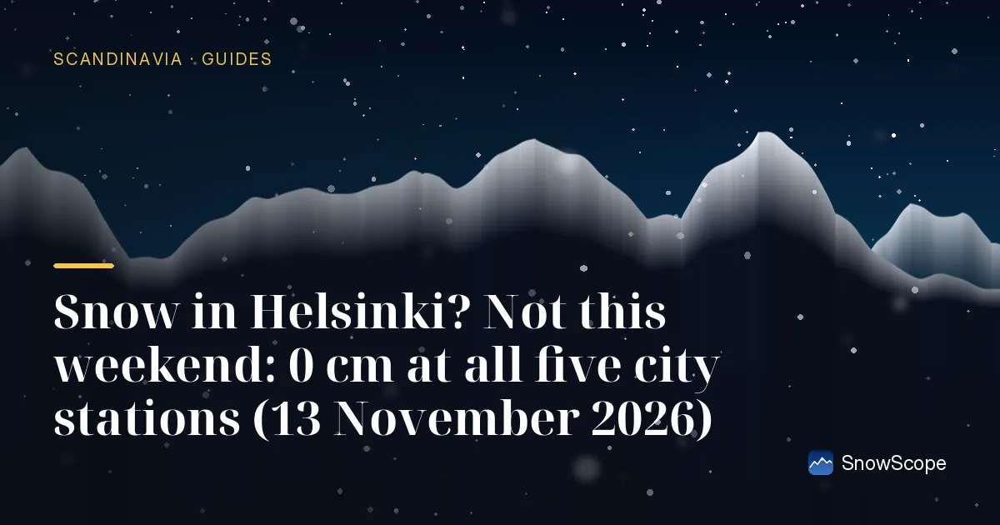

Snow in Helsinki? Not this weekend: 0 cm at all five city stations (13 November 2026)
Helsinki remains snow-free on Friday. Measurements at Kaisaniemi, Kumpula, Espoo Tapiola, the airport and Nuuksio all show bare ground. While northern cities like Oulu and Rovaniemi are already white, the capital sits on the wrong side of a sharp weather divide that runs through mid-Finland.
See the live snow forecast for Helsinki in the SnowScope appSnow depth, powder alerts and the 3D map, free.
The snow line runs far north of the city
On 13 November, real snow cover does not reach south of about the 64th parallel. Around Oulu, nearly all stations have snow. In the band between the 64th and 66th parallels, 23 of 25 stations measured snow. South of that, the picture collapses: in the entire southern half of Finland, from coast to coast, only 6 of 53 stations have snow at all, and none hold more than 2 cm.
The closest white ground to Helsinki is at Kiikala airfield near Salo, 78 km west, with 2 cm. The next stations inland have 1 to 2 cm. To reach reliable snow cover, you must drive hours north. This divide is typical for mid-November, when Arctic air pushes down into the north and east but warm Atlantic weather still controls the south.

Helsinki's late-season snow habits
Snow history from 46 past winters tells a clear story. On 13 November, the city was white in only 11 of those winters. The middle value for today's date is 0 cm, and the highest ever recorded on this day was 18 cm—a rare event. In each of the last five winters, 13 November brought bare ground, just like today.
Half of the past winters saw their first lasting snow by 20 November. That means next week is the usual window when Helsinki gets its chance. But the city's snow is always thin at first: 2 cm is typical for 1 December, 4 cm by mid-December, and about 13 cm by mid-January. Early snow melts easily; the real build-up takes weeks.
This weekend: drizzle, not snowflakes
Saturday stays grey and near freezing, between 0 and 2 °C. Light rain and drizzle will fall, totalling 1 to 2 mm, with perhaps a trace of wet snow that will not settle on warm ground. Sunday turns drier and milder, climbing to about 8 °C. By evening, bare pavement and grass are likely again.
Monday brings more rain, between 1 and 9 mm depending on the forecast. No snow is in sight for the city this weekend. The ground will be wet and cold, but not white.
What to watch for on the streets
Although snow is absent, the weekend brings its own hazards. Frosty nights and wet days mean slippery leaf litter on paths, and bridge surfaces often freeze before open ground. Early morning and evening are the slip risk. Wear grip-soled shoes if you plan to walk near the shoreline or parks.
If you are determined to find snow this weekend, travel north. Oulu, 600 km away, has 7 cm measured this week. Rovaniemi has 7 to 8 cm. Both are still early in their season, but both are white. For Helsinki, the wait continues. Next week's forecast will be more interesting.
Tips for skiers
- Frosty mornings and wet leaves pose the real slip risk this weekend: test your grip on park steps and shore paths before you commit your weight.
- If you are out of the city and see snow on the forecast, drive north today or tomorrow. South of the 62nd parallel, the ground is bare.
- Check back next week. 20 November is the typical arrival date for Helsinki's first lasting snow, and the forecast after the weekend will tell you whether this year keeps to the schedule.
- Early-season snow is thin and can hide rocks and roots. If you find snow on higher ground inland, ski carefully and watch for bare patches.
- Pack layers for the weekend: it will be cold and damp, not snowy. A waterproof jacket matters more than thermal base layers this time.
About these numbers
Resort snow depths are the deepest snow on the resort's upper slopes on the date shown; they are estimates for an area, not a measurement at one point. Forecasts can change. Always read the official avalanche bulletin before going off-piste.
Cite this report
For research, teaching or the press: the numbers and charts are free to reuse under CC BY 4.0 with this citation.
SnowScope (2026), Snow in Helsinki? Not this weekend: 0 cm at all five city stations (13 November 2026), https://snowscope.app/blog/en/2026/11/helsinki-snow-today-13-november-2026.html, accessed 2026-11-13
SnowScope (Atlas Labs). (2026, November 13). Snow in Helsinki? Not this weekend: 0 cm at all five city stations (13 November 2026). SnowScope snow reports. https://snowscope.app/blog/en/2026/11/helsinki-snow-today-13-november-2026.html
BibTeX
@misc{snowscope2026helsinkisnowtoday13novem,
author = {{SnowScope (Atlas Labs)}},
title = {Snow in Helsinki? Not this weekend: 0 cm at all five city stations (13 November 2026)},
year = {2026},
month = nov,
howpublished = {\url{https://snowscope.app/blog/en/2026/11/helsinki-snow-today-13-november-2026.html}},
note = {Published 2026-11-13 20:09 UTC; accessed 2026-11-13}
}· CC BY 4.0 · Methods, data and tools →
Follow Helsinki
Free: a message when fresh snow is coming, and the forecast every morning.
More snow reports

Myrkdalen sits behind normal for mid-November, but 44 cm of new snow is forecast at the top in the next week. Data from 13 November.

Lofsdalen has 6–8 cm across the valley as of 13 November 2026, with 7 cm forecast over the next week and no rain threat.

Levi's December snow has strengthened over time. Last 15 winters: 100% of Christmas weeks had 30 cm or more. Typical depth 15 December: 38 cm. Data 13 November 2026.